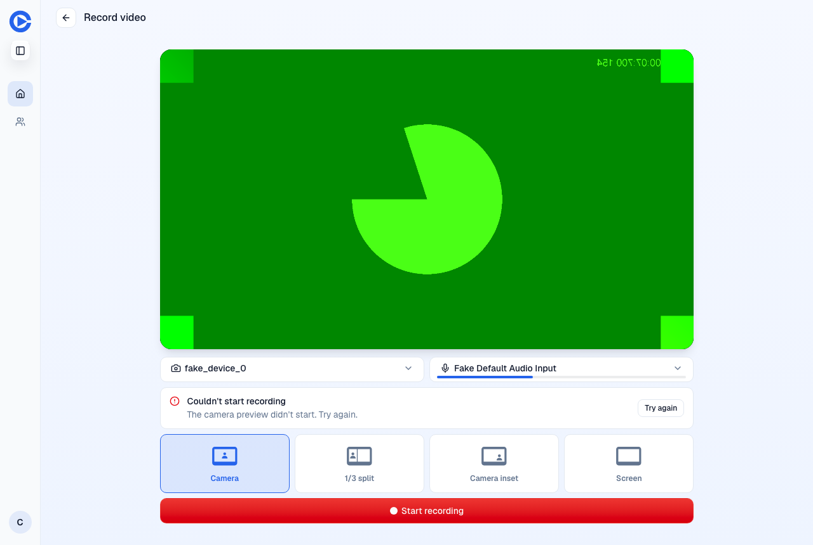
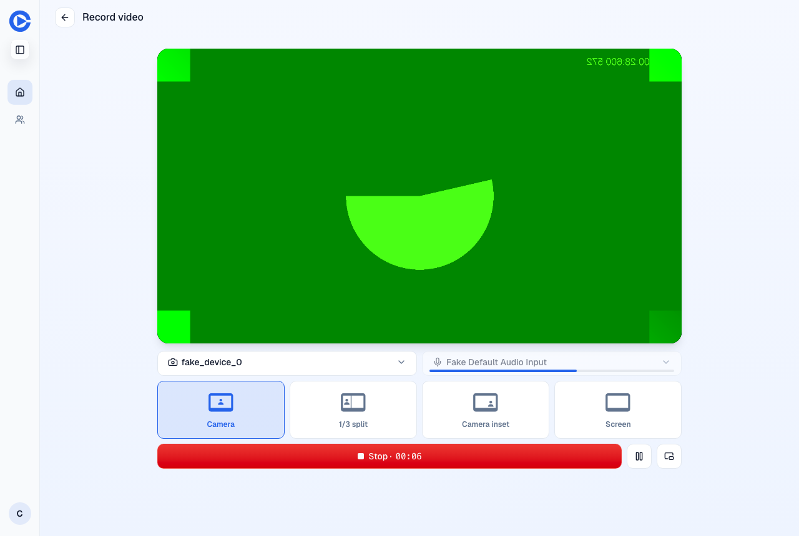
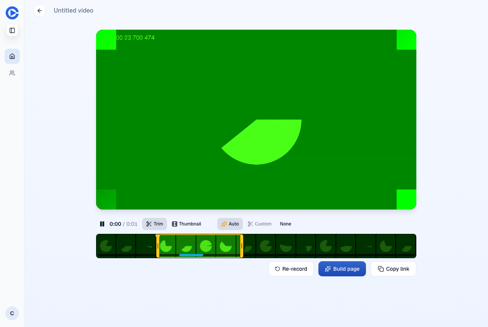

Recorder start on the PR preview at head 3f43aff370bc3096320991ffa022e0e5f5301917. A throwaway script made the MediaRecorder constructor throw on its first call only. Mock account and fake camera only.
There is no Before screenshot. The main preview no longer exists and staging is read-only, so the Before comes from the new test on the merge base, which fails because the failed attempt requests a grant.


